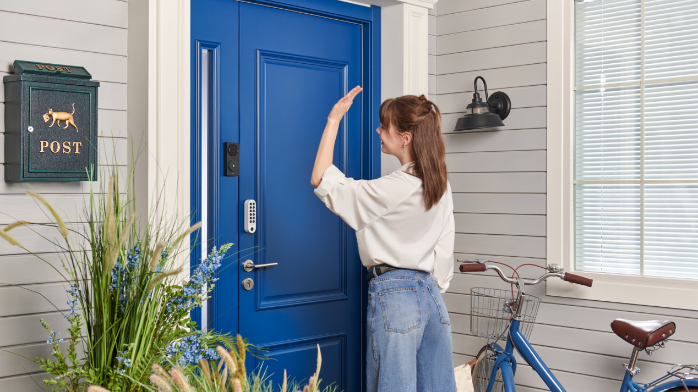

Guide · Cameras & doorbells
Aqara doorbell with Home Assistant: G4 vs G410 (2026)
An Aqara video doorbell will talk to Home Assistant, but not the way most buyers expect. Home Assistant's own Aqara integration covers only Aqara's Matter devices, and its certified list has locks, sensors, bulbs, switches and a valve controller on it — no cameras and no doorbells (Home Assistant Aqara integration). Both Aqara doorbells are instead HomeKit accessories, so the path is the HomeKit Device integration. What you get on the other side depends entirely on the model: the current Doorbell Camera Hub G410 can publish an RTSP stream for Frigate, go2rtc or Home Assistant's Generic Camera when it is hardwired; the older Video Doorbell G4 gives you a button press and nothing else. Neither one gives you a camera entity in Home Assistant out of the box.

What the two doorbells actually are
The G4 is the older, cheaper-feeling design: a 1080p camera with a 162-degree field of view and infrared night vision, a six-cell AA battery pack rated for "up to 4 months" on Aqara's own assumption of 35 wake-ups and 6-second clips a day, and an indoor Chime Repeater that holds the microSD slot (up to 512 GB) where nobody outside can reach it (Aqara G4 product page).
The G410 is the current model, announced globally on 10 July 2025 and marketed as Aqara's first "doorbell camera hub" (Aqara announcement). It steps up to a 2K sensor with an f/1.8 lens and a 175-degree field of view, and adds an mmWave presence sensor to cut false alerts. The "hub" in the name is literal: it also works as a Matter Controller, a Thread Border Router and an Aqara Zigbee hub, and Aqara claims support for more than 50 types of third-party Matter devices.
| Spec | Video Doorbell G4 | Doorbell Camera Hub G410 |
|---|---|---|
| Camera | 1080p, 162° FOV, IR night vision | 2K, f/1.8, 175° FOV, mmWave presence |
| Power | 6 × AA battery; or 12-24 V AC/DC wired with batteries as backup | 6 × LR6 AA; main unit 12-24 V AC 0.2 A or 12-24 V DC 0.5 A |
| Battery life claim | "Up to 4 months" at 35 wake-ups and 6-second clips per day | "Up to five months" at 10 wake-ups per day |
| Storage | microSD up to 512 GB, in the indoor Chime Repeater | microSD up to 512 GB (Class 10+, not included), in the chime/hub |
| RTSP | Not documented | Documented, hardwired only |
| Hub radios | Chime Repeater only (95 dB, USB-C) | Zigbee/Thread 802.15.4, Wi-Fi 2.4/5 GHz, Bluetooth |
| Operating range | Not specified on the product page | -18 °C to +50 °C |
Specs above from the G410 spec sheet and the G4 product page.
The short answer: buy the G410 if you can hardwire it
For a Home Assistant household, the deciding line is not resolution or price. It is whether the doorbell will be wired to a transformer. Aqara states that the G410 "supports RTSP protocol" and can "stream to third-party clients like Home Assistant over the local network", naming NVR software such as Frigate. A footnote on the same release narrows that: RTSP is only available when the doorbell is hardwired to a low-voltage power supply. On batteries you do not get an RTSP stream (Aqara announcement, footnote 2).
That is the whole decision. Wire a G410 and you have a normal IP camera on your LAN that Home Assistant can ingest; leave it on batteries and it behaves like a cloud doorbell with a HomeKit side door. The G4 has no documented RTSP path at all, so it is a button and an Aqara app camera, full stop.
How the G410 reaches Home Assistant
There are two separate jobs, and it helps to treat them separately: video and the button press.
Video. Once the G410 is wired, point a stream consumer at its RTSP URL. Frigate is the usual choice because it handles detection and recording on your own hardware; go2rtc is the lighter option if you only want the feed on a dashboard; Home Assistant's Generic Camera integration will also take an RTSP URL and produce a camera entity. Aqara does not document the exact URL path on its public pages, so read it from the Aqara Home app after enabling the stream rather than guessing. 24/7 recording needs two things at once — a microSD card and constant wired power — per footnote 4 of the same release. Without the card you get live view, not a local archive.
The button. Pair the same doorbell with Home Assistant as a HomeKit accessory. Home Assistant's HomeKit Device documentation lists "Automation triggers (HomeKit 'stateless' accessories like buttons, remotes and doorbells)" as supported, which means a press surfaces as a device automation trigger rather than as a sensor you can read (Home Assistant HomeKit Device). Use that trigger to flash lights, pause the TV, or send a notification.
What you do not get is a camera entity through HomeKit: cameras are not on Home Assistant's supported-device list, and the docs are blunt about the consequence — "If your device is not on this list then you may still be able to pair it, and it will be visible in the Device Registry. But Home Assistant may not create entities." That sentence describes the doorbell-camera case exactly.
How the G4 reaches Home Assistant
The same HomeKit Device route gives you less. A G4 pairs, appears in the Device Registry, and contributes a doorbell press trigger. There is no camera entity and no RTSP URL, because Aqara's G4 page never mentions RTSP; its "local streaming" claims refer to Google and Alexa smart displays and to HomeKit Secure Video, not to a stream you can pull into an NVR (Aqara G4 product page).
For a lot of houses that is enough. A press is the event that matters — announce "someone's at the door" on the kitchen speaker, turn on the porch light, push a notification with the camera snapshot from the Aqara app. If you want the video inside Home Assistant, the G4 is the wrong purchase.
One more G4 caveat while you are planning: automatic backup to an SMB NAS is described by Aqara as a future feature ("in the future the videos can be backed up automatically to an SMB NAS"), not something shipping today. Do not buy it expecting a native NVR handoff.
Setup: pairing either doorbell with HomeKit Device
- Make sure Home Assistant has
zeroconf— in practicedefault_config— so HomeKit accessories are discovered on the LAN. - If the doorbell is already in Apple Home, remove it there first. Home Assistant's docs are explicit: the device must be "on your network, but not paired with another HomeKit controller". One controller per accessory.
- Put the doorbell into pairing mode and note the HomeKit code printed on the device or its packaging.
- In Home Assistant, go to Settings, then Devices & services. The accessory should appear as a discovered HomeKit Device; otherwise choose Add integration and pick HomeKit Device.
- Enter the pairing code. The doorbell lands in the Device Registry.
- Build a device automation on the doorbell trigger. Home Assistant does not create duplicate events for device-automation triggers, so do not also build an event listener for the same press.
- For the G410, enable the RTSP stream in the Aqara app while wired, then add the URL to Frigate, go2rtc or Generic Camera.
Gotchas before you buy
- Battery mode changes what you own. RTSP on the G410 and 24/7 microSD recording on both models need wired power. Battery mode is event clips only on the G4, and no RTSP on the G410.
- HomeKit Secure Video is not free. On the G410 it caps resolution at 1200p and needs an iCloud subscription plus an Apple home hub. It is a cloud path, not a local one.
- Local storage lives indoors. The microSD slot sits in the chime repeater, which is good for security and annoying if you want to swap cards without walking inside.
- The Aqara integration will not help. It covers Matter devices only; cameras and doorbells are absent from the certified list, so there is no official local-push entity for video.
- No subscription needed for local storage. Both models record to microSD without a plan, and the G4 page lists 7 days of free cloud storage included. That free tier is a cloud dependency, so decide whether you want it on.
Which to buy
Aqara Doorbell Camera Hub G410 — the pick for Home Assistant, provided you can supply 12-24 V AC or DC at the door. It is the only one of the two with a documented RTSP path, and it doubles as a Thread Border Router and Zigbee hub if you need one at the front of the house. Check Aqara Doorbell Camera Hub G410 on Amazon for current price and stock.
Aqara Smart Video Doorbell G4 — the pick when there is no wiring at the door and you only need the press in Home Assistant. It is cheaper, it runs on AA cells, and its chime repeater covers a normal house. Check Aqara Video Doorbell G4 on Amazon for current price and stock.
If video in Home Assistant is the actual goal, compare the wider field before committing — our Zigbee hub guide covers the radio side of an Aqara-heavy house, Matter & Thread explains what the G410's border router is doing, and Aqara smart locks covers the other device most people put on the same door. The Home Assistant section has the rest of the stack.
FAQ
Does the Aqara Video Doorbell G4 work with Home Assistant?
Partly. The G4 pairs with Home Assistant through the HomeKit Device integration, and a doorbell press arrives as a device automation trigger. Home Assistant does not create a camera entity for it, and the G4 does not offer an RTSP stream, so it cannot feed Frigate or a dashboard camera card.
Why does Home Assistant only show a doorbell press and no camera for my Aqara doorbell?
Home Assistant's HomeKit Device integration lists stateless accessories such as doorbells as supported for automation triggers, but cameras are not on its supported-device list. Home Assistant's own documentation warns that an unsupported device may pair and appear in the Device Registry without Home Assistant creating entities.
Aqara G4 vs G410 — which one should I put on Home Assistant?
The G410 if you can hardwire it to a low-voltage supply: Aqara documents RTSP support for third-party clients including Home Assistant, so the video can go to Frigate or go2rtc and the button can still come through HomeKit Device. Pick the G4 if it will run on batteries and you only want the press to fire automations.
Does the Aqara G410 support RTSP for Frigate or go2rtc?
Yes, but only when the doorbell is wired to a low-voltage power supply. Aqara's announcement says the G410 supports RTSP and can stream to third-party clients such as Home Assistant; a footnote on the same release limits that support to hardwired installations, so a battery-only G410 does not publish an RTSP stream.
Do I need an Aqara hub or a subscription to use the G4 or G410?
No hub is required for either model. Both ship with a chime repeater that holds the microSD card and repeats the signal. Local recording to microSD needs no subscription; Aqara includes a free 7-day cloud tier, and HomeKit Secure Video requires an iCloud subscription and an Apple home hub.
Can Home Assistant use Aqara's on-device face recognition?
Not through the documented Home Assistant path. Aqara describes face recognition on the G4 as running locally on the device and triggering Aqara Home automations. Home Assistant's HomeKit Device integration documents doorbell presses as triggers and does not list camera or face-recognition entities for these models, so plan on Aqara Home for the face step.
We publish a daily brief on Home Assistant, Zigbee, Z-Wave and Matter releases. Read the latest.
- Primary sources
- Aqara Smart Video Doorbell G4; Aqara Doorbell Camera Hub G410 announcement; G410 specifications; Home Assistant HomeKit Device; Home Assistant Aqara integration
As an Amazon Associate, HA News earns from qualifying purchases.